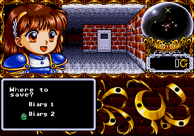
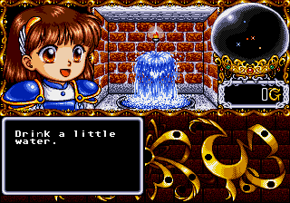

ゲームを開くと起きること
初回は、ソフトが数分間ひとりでゲームを遊びます。暗号を解くように、どの絵がどの文字かを割り出し、テキストがどこに入っているかを見つけます。
ゲームに入っているテキストは選んだ言語に書き換えられ、メニューや会話はゲーム本来の文字と色のまま表示されます。書き換えられないテキストは画面の上に描きます。
日本語はかなも漢字も画面から直接読み取り、あなたのパソコンの中で動くモデルが翻訳します。外部には何も送りません。
ゲームを選び、言語を選んで、遊ぶだけ。Retro Translator はゲームごとの文字の書き方を覚え、ゲーム自身の画面の上で翻訳します。
Windows 版をダウンロードWindows 10・11 対応の無料ソフト。ファイルひとつで、インストール不要、オフラインで動きます。ゲームは含まれていません。

初回は、ソフトが数分間ひとりでゲームを遊びます。暗号を解くように、どの絵がどの文字かを割り出し、テキストがどこに入っているかを見つけます。
ゲームに入っているテキストは選んだ言語に書き換えられ、メニューや会話はゲーム本来の文字と色のまま表示されます。書き換えられないテキストは画面の上に描きます。
日本語はかなも漢字も画面から直接読み取り、あなたのパソコンの中で動くモデルが翻訳します。外部には何も送りません。


このページから retro-translator.exe を入手します。ファイルはひとつだけです。
ROM と、遊びたい言語を選びます。
ゲームは翻訳された状態で始まります。F1 で原文に戻せます。
| ゲーム機 | 状況 |
|---|---|
| メガドライブ / Genesis | 対応 |
| ほかのゲーム機 | 予定 |
はい。販売はできません。使用しているエミュレーターが商用利用を認めていないためです。
いいえ。ファイルをひとつダウンロードして開くだけです。新しい版は古い版のデータを自動で片づけます。
ゲームは含まれていません。お持ちのゲームのコピーを使ってください。
ほとんどは自然に読めますが、直訳や誤訳もあります。ロゴのように絵で描かれた文字はそのままです。
いいえ。すべてあなたのパソコンの CPU で動きます。